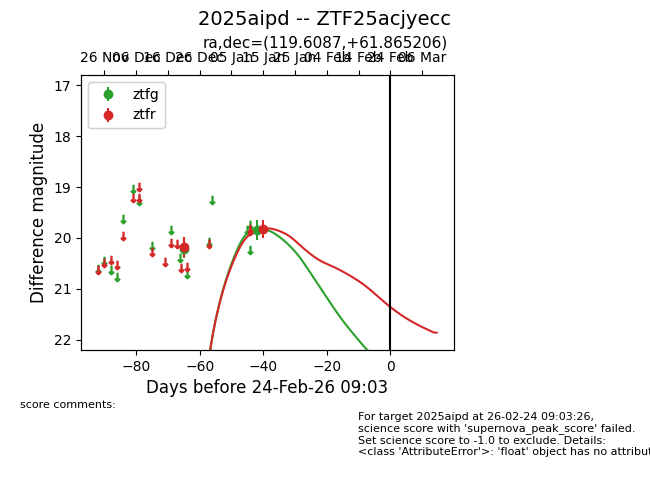
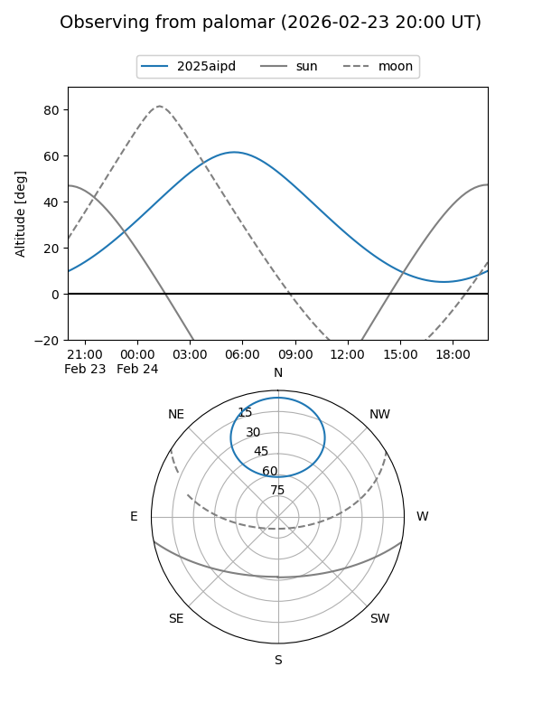
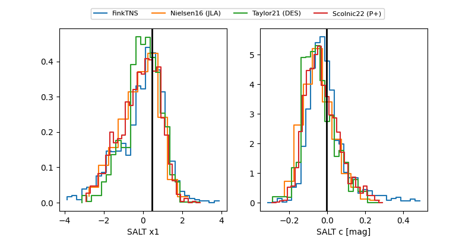

2025aipd
Target 2025aipd at 2026-01-09 12:49
Aliases and brokers:
FINK: link
Lasair: link
ALeRCE: link
TNS: link
YSE: link
alt names
ZTF25acjyecc (ztf,fink_ztf)
2025aipd (tns,yse)
Coordinates:
equatorial (ra, dec) = 119.6087,+61.86521
equatorial (HMS+DMS) = 07:58:26.09,+61:51:54.74
galactic (l, b) = (154.9232,+31.53690)
Flags:
Photometry:
last ztfg=20.21, ztfr=20.17
1 ztfg, 1 ztfr detections
Lightcurve

Visibility


Additional plots
